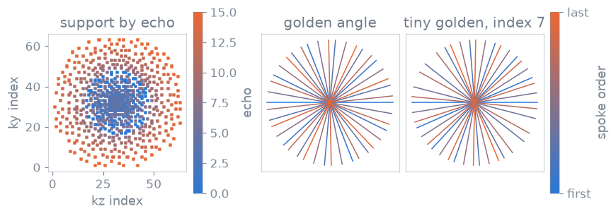

Sampling and ordering#
TL;DR
Which views or directions are acquired, when each is played, and the per-repetition RF values are three separate answers, each a function returning an array.
None of them creates events or labels; the sequence function turns the arrays into gradients, labels and RF offsets.
A sequence has to decide which k-space samples it acquires, in what order, and with which RF phase on each repetition. You keep those decisions out of the scan loop: a view-selection, ordering or schedule rule that a sequence needs is a function of the package, called once before the loop, and the loop reads its result. The shipped sequences are written that way, as in lesson 5 of the Course.
Capabilities#
Selects the views of a Cartesian axis or ky-kz plane, as a calibration block and an imaging lattice, with partial Fourier and an elliptical crop.
Show code and tests
Code:
make_cartesian_axis_sampling(),make_cartesian_plane_sampling(). Tests: the centre view is acquired whatever the undersampling; the calibration block and the lattice do not overlap; partial Fourier drops the views before the centre and no others (test_sampling_cartesian.py).Draws CAIPIRINHA, variable-density Poisson-disc and uniform-random supports as boolean masks.
Show code and tests
Code:
make_caipirinha_mask(),make_poisson_disc_mask(),make_random_mask(). Tests: a caipirinha shift climbs one partition per acquired line (test_sampling_cartesian.py); one seed gives one mask; the calibration block is always fully sampled; a request is either met or refused for a reason it states (test_sampling_poisson.py).Orders selected views into shots and echoes: linear, centric, radial, radial about a target echo, and T2 Shuffling.
Show code and tests
Code:
make_linear_order(),make_centric_order(),make_radial_order(),make_radial_adaptive_order(),make_shuffling_order(). Tests: every ordering covers its views once (test_sampling_orderings.py); an ordering returns indices not coordinates; the adaptive order puts the kspace centre not the centroid at the target; shuffling is reproducible by seed and keeps clustered membership (test_sampling_contracts.py).Permutes the positions of one loop axis: sequential, reverse, interleaved, centre-out, outside-in or random.
Show code and tests
Code:
make_traversal_order(). Test: a sampling routine returns its recorded result (test_sampling_regression.py).Gives the within-shot phase-encoding offsets of an EPI shot: linear, segmented blipped-CAIPI or zigzag.
Show code and tests
Code:
make_epi_shot_offsets(). Tests: epi offsets start at the origin; segmented shots interleave to every accelerated line; caipi offsets tile the caipirinha lattice (test_sampling_contracts.py).Computes per-shot angles for radial, spiral and blade readouts: uniform, golden, tiny golden and rational approximate golden (RAGA), and a 3D projection shell.
Show code and tests
Code:
calc_uniform_angles(),calc_golden_angles(),calc_tiny_golden_angles(),calc_raga_angles(),calc_projection_shell(). Tests: default golden is the pi periodic radial angle; full circle golden is the classic 137 degree angle; diametric uniform never repeats a direction (test_sampling_angles.py).Computes per-repetition RF phase schedules (quadratic spoiling, repeated cycles) and a refocusing flip-angle schedule.
Show code and tests
Code:
make_rf_spoiling_schedule(),make_phase_cycling_schedule(),make_traps_schedule(). Tests: every slice is rf spoiled by its own excitation count (test_examples.py); a sampling routine returns its recorded result (test_sampling_regression.py).
Division of responsibility#
Turns the arrays into a sequence. It scales each phase-encoding gradient from a view, rotates a readout by an angle, offsets the RF and ADC phase by a schedule value, and writes the
LIN,PAR,ECO,IMA,SEG,SLC,SETandREPlabels from the view and its place in the loop (Sequence modules and functions).Chooses what is played first. Calibration views, prescans and the origin of each EPI shot are the loop’s decisions.
Method#

A Poisson-disc support with its calibration block, each view coloured by the echo at which the adaptive radial order plays it with the centre at echo 4 of 16, and the first 21 spokes of the golden and tiny golden angles, coloured by acquisition order.#
Support and ordering#
The support is the set of views acquired; the order is the repetition, shot and
echo at which each is played. Poisson-disc sampling changes the first and
T2 Shuffling the second, and either can be used without the other. The
shipped fast-spin-echo sequence combines them under ordering='shuffling'.
The orderings return row numbers into the array you pass, not coordinates, so the same index selects the encoded view that scales the gradient. They measure distance and angle from the k-space centre, which is a property of the grid rather than of the acquired set: with an even matrix, partial Fourier or an asymmetric support the centroid of the views is not the centre, and an ordering that used it would play the wrong view at the target echo. You pass views as offsets from the centre.
Golden-angle increments#
A fixed increment of \(\pi/\phi\) keeps any window of consecutive spokes close to uniformly spread, so a retrospective choice of window still covers the circle. Tiny golden angles shrink the increment to \(\pi/(\phi + N - 1)\) for index \(N\), which reduces the angular step between consecutive spokes. RAGA draws the angles from a finite equidistant set, so they repeat exactly.
RF spoiling and phase cycling#
Quadratic RF spoiling steps the phase by an increment that itself grows by 117 degrees per repetition, and the schedule applies to the excitation and the ADC alike. A phase cycle such as \((0, \pi)\) alternates for balanced SSFP.
The definitions, frames and index conventions are in Sampling and ordering internals.
Examples#
5. Radial sampling and gradient surgery: golden-angle spokes in a radial gradient echo.
3. Spoiling: RF spoiling and the spoiler gradients.
9. Sequence modules: a sequence function that calls the sampling routines.
Segmented echo planar imaging: EPI shot offsets and interleaving.
Sequence catalogue: the shipped sequences that use them.
Sampling and scan-loop schedules: the routines, their inputs and returns.